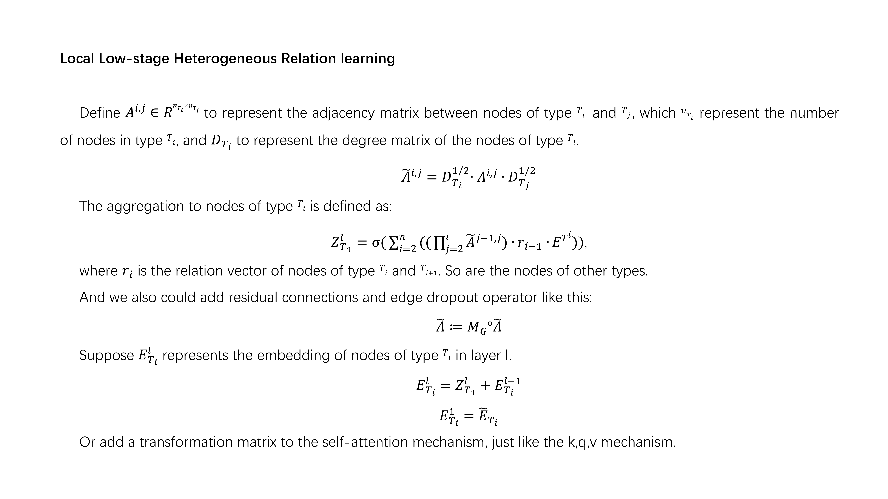
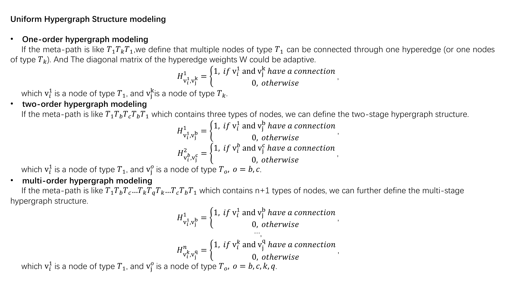
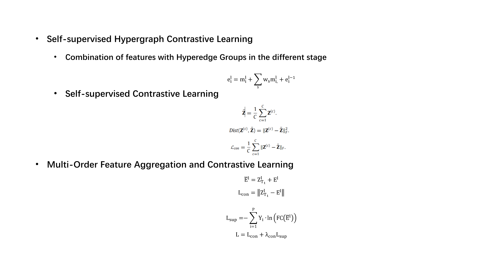
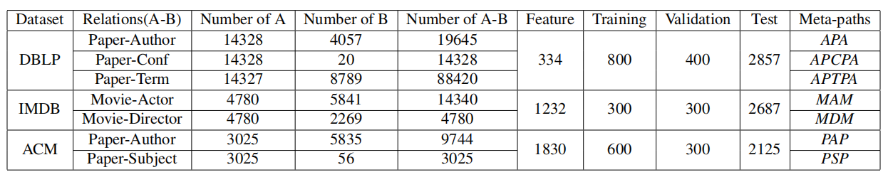

A Unified dual-stage Multi-order hypergraph based Contrastive Collaborative Learning for Heterogeneous Graph
在异构图表示学习领域，现有的方法主要基于元路径进行消息聚合，但这些方法仅关注本地低阶的表示信息，忽略了全局高阶的结构信息。针对这一问题，本项目提出了一个通用的双阶段多阶超图对比协同学习框架，通过引入超图来捕获全局高阶结构信息，并设计了相应的异构超图卷积和信息聚合策略。
Task: classify the labels of nodes of \( T_1 \) type
node types: \( T_1, T_2, T_3, \dots, T_n \)
meta-paths: \( T_1 T_b T_c \dots T_k T_q T_k \dots T_c T_b T_1 \)
在异构图的表示学习中，常用的方法是基于元路径进行消息聚合。但是现有的方法只聚合了本地低阶的表示信息，而丢失了全局高阶的结构信息。因此，本文引入超图来捕获全局高阶的结构信息。本文挖掘了超图和异构图的潜在关联，提出了一种通用的将异构图建模成多级超图的方法，并针对此提出了相应的信息聚合策略（异构超图卷积）。因此，本文提出了一种将本地低阶的表示信息与全局高阶的结构信息进行对比协同以捕获更具有标示性的节点特征。
现有的基于元路径的消息聚合策略存在参数冗余、只可用于特定元路径、关系信息挖掘不充分、忽略其他类型节点特征等问题。因此，本文提出了一种通用的 embedding 以及信息聚合策略，以原异构图结构为基础，挖掘节点特征。




适用于各种类型的异构图数据，不局限于特定领域
本地与全局特征学习相结合，捕获多层次信息
通过对比学习增强特征表示的判别能力
捕获高阶结构信息，超越传统图方法
参数高效，避免冗余计算，训练和推理快速
在节点分类任务上取得显著提升